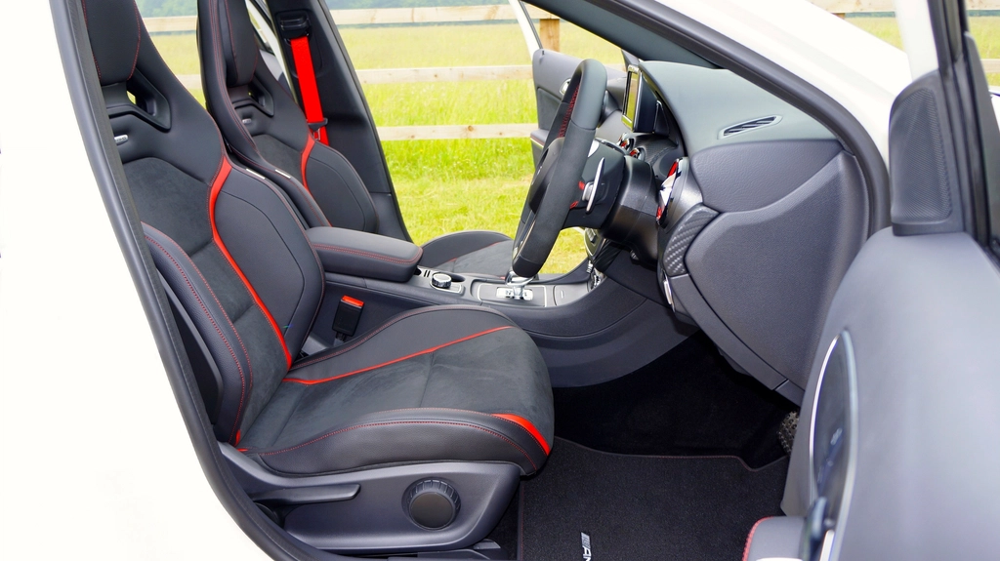

O interior do carro limpa-se num sábado de manhã
Café entornado no banco, marcas das cadeirinhas, pelos do cão na mala, aquele cheiro que já nem nota mas as visitas notam. A lavagem normal trata da chapa; por dentro, o carro só fica limpo a sério com uma máquina de extração, a mesma que os detalhes profissionais usam.

Bancos de tecido. Nos de pele a máquina não entra, e nós dizemos-lhe isso antes de reservar.
O que dá para limpar no carro
- Bancos de tecido, incluindo os encostos de cabeça
- Tapetes e alcatifa do piso
- Forro da mala
- Cadeirinhas e assentos de bebé, com atenção às etiquetas
Bancos de pele não: a máquina é para tecidos. Se o carro tiver interior misto, lava o tecido com a máquina e limpa a pele com o produto próprio dela.
O bocal de mão faz a diferença
A máquina vai com três bocais e é o de mão que trabalha no carro. É estreito, cabe entre os bancos e nas calhas, e injeta e aspira no mesmo movimento. Passa-se devagar, faixa a faixa, e a água volta suja para o depósito. Nódoas de café, sumo e gordura de mãos saem quase sempre à primeira; para as mais teimosas levamos um spray tira-nódoas como extra (8€).
Como se faz
- Aspire primeiro o interior a seco e tire os tapetes.
- Passe o bocal de mão nos bancos, do encosto para o assento, sem encharcar.
- Termine com os tapetes e a mala, e deixe as portas abertas uma ou duas horas.
Um interior completo demora uma a duas horas. Como a extração aspira quase toda a água, os bancos ficam apenas húmidos e secam com as portas abertas ou numa viagem curta com as janelas entreabertas. As doses e as passagens estão explicadas nas instruções passo a passo.
Quanto custa, em comparação
Uma limpeza interior profunda num detalhe profissional custa tipicamente 60€ a 120€. O aluguer da máquina custa 40€ pelo dia inteiro, e no mesmo dia ainda lava o sofá e os colchões lá de casa. Entregamos e recolhemos em Viseu, sem custo até 5 km do centro.
Reserve o dia, nós entregamos a máquina e explicamos como se usa. Detergente incluído.
Pedido de reservaTambém pode interessar
- Limpeza de sofás: aproveite o mesmo dia de aluguer.
- Limpeza de colchões: meia hora por colchão.
- Zonas servidas: veja se entregamos na sua localidade.
- Café entornado no carro: como tirar do banco e do tapete.
- Guia de nódoas mancha a mancha: da tinta ao chocolate, o que resulta em cada caso.